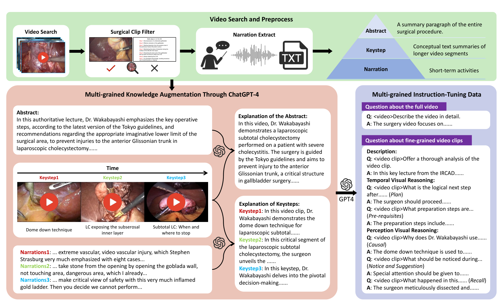
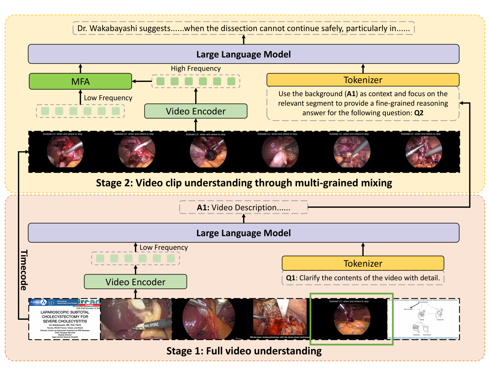
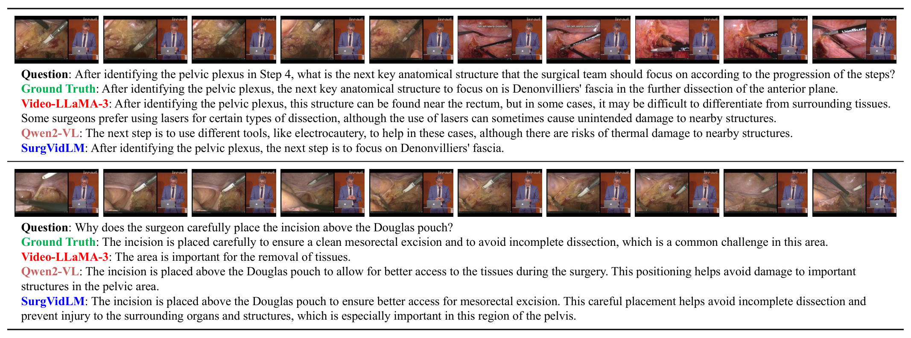

图文解读
1背景与动机
外科医生关心"这一步之后做什么、为什么这么做",答案往往藏在视频的某个短片段里。 图像级手术大模型只看单帧;通用视频大模型受显存限制,对整段视频稀疏抽帧,短时操作容易被跳过。
数据也是瓶颈。LLaVA-Surg 的 Surg-QA 有 102K 视频问答对但未公开,Surgical-LLaVA 用图像级标注微调。论文要同时补数据和模型两块。
2核心观点速览
- 数据:1882 个讲解视频,用自带的关键步骤时间码切片,由 GPT-4 生成 1.8K 个全视频问答和 29.4K 个片段问答。
- 推理:第一阶段每秒 1 帧看全片并写描述;第二阶段按时间码在片段内每秒 2 帧采样,并把第一阶段描述当背景文本。
- 融合:多频融合注意力 MFA 让片段词元从全片词元中取回上下文。
- 结果:细粒度任务全部指标领先微调后的基线,全视频描述与基线持平。
边界:片段时间码由标注给出,基线是否拿到同一片段论文未说明。
3数据从哪里来
多粒度监督来自讲解视频自带的结构。 每个视频有摘要和带时间码的关键步骤,按关键步骤切片。讲者画面和幻灯片用 ResNet-50 过滤:帧级准确率 94%,片段中至少 80% 的帧判为手术才保留。音频用 Whisper 转写,再由 GPT-4 纠错。
这样得到摘要、关键步骤、讲解三级文本。GPT-4 用关键步骤重组摘要,把讲解细节并入关键步骤,再生成问答:全视频描述、片段描述、时序推理(下一步、前置步骤)和感知推理(因果、注意事项、回忆)。

已发布数据核查: 全视频问答 1505 条训练、377 条测试;片段问答 22766 条训练、6004 条测试,比论文的 29.4K 少约 600 条;按视频划分,训练测试不重叠。测试片段中感知推理 4200 条,时序推理只有 404 条。
接下来看模型怎么用这些时间码。
4两阶段推理与 MFA
核心矛盾是显存:全片高频太贵,全片低频丢细节。 两阶段把这两件事分开:
- 第一阶段:每秒 1 帧抽全片,沿用 Qwen2-VL 原结构生成描述 A1。
- 第二阶段:按问题对应的时间码在片段内每秒 2 帧采样得到高频词元,提示词要求以 A1 为背景回答问题。
- MFA 融合后送入大语言模型生成答案。
$$E(X_C, X_F) = \mathrm{softmax}\left(\frac{X_C X_F^{T}}{\sqrt{d}}\right) X_F,\quad X_{fuse} = X_C + E(X_C, X_F)$$
$X_C$ 是片段高频词元,作查询;$X_F$ 是全片低频词元,作键和值。每个片段词元按相似度取回全局上下文,再加回自身。MFA 是否有可学习投影论文未说明。

5训练怎么做
- 从 Qwen2-VL-7B-Instruct 初始化,视觉编码器全程冻结。
- 第一阶段只用全视频问答做 LoRA 微调,批大小 4,约 3 小时。
- 第二阶段用片段问答训练大语言模型和 MFA,批大小 16,约 15 小时。
- AdamW,学习率 $1\times10^{-4}$,1 个 epoch,224×224,6 张 H100。
训练成本不高,一个实验室规模的集群就能复现。
6结果说了什么
| 任务 | 微调 Qwen2-VL | 微调 Qwen2.5-VL | SurgVidLM |
|---|---|---|---|
| 全视频描述 CU | 2.69 | 2.76 | 2.69 |
| 片段描述 CU | 1.98 | 2.66 | 3.06 |
| 时序推理 ROUGE-L | 29.76 | 20.63 | 31.58 |
| 感知推理 ROUGE-L | 34.48 | 33.34 | 37.51 |
细粒度 12 项指标全部最高,全视频描述与微调 Qwen2-VL 完全相同。 后者说明第一阶段没有方法增益,增益全在片段任务上。
正文增益与表格部分不符:感知推理 ROUGE-L 按表应为 3.03,正文写 4.03;片段描述的 CI、DO、TU 增益在表中找不到对应差值。

7消融拆开了什么
| 配置 | CU | ROUGE-L |
|---|---|---|
| 两者都无 | 1.98 | 33.06 |
| 仅 StageFocus | 3.04 | 36.95 |
| 两者都有 | 3.06 | 36.97 |
增益几乎都来自 StageFocus,MFA 主要提升描述细节。 但 StageFocus 同时带来了标注时间码、片段高频帧和背景文本三样东西,消融没有拆开。
采样频率从 0.5 到 2 fps 持续上升,4 fps 在 CI、TU、BLEU-4、ROUGE-L 上反而更高。作者以成本为由选 2 fps,但不同帧率下的显存和时延论文未说明。
8为什么有效:三种替代解释
分数高不等于学会了细粒度推理。 下面三种更简单的解释论文都没有排除:
| 替代解释 | 区分实验 |
|---|---|
| 标注时间码直接指向答案 | 给基线同一片段,或改用预测片段 |
| 背景文本与参考答案词汇重叠 | 只给背景文本,不给高频帧 |
| GPT-4 偏好 GPT-4 风格的回答 | 外科医生人工评分 |
我的判断是,第一种解释的权重最大:片段问答本来就是按该关键步骤文本生成的,时间码等于告诉模型去哪里找答案。
9复现与使用要注意什么
- 数据在 Hugging Face 公开、无需申请,但视频很大:测试集约 157 GB,训练视频三个分卷约 826 GB。
- 代码仓库仍写训练集"接收后公开",以 Hugging Face 实际文件为准。
- 有 2006 条片段的结束时间码不大于起始值,使用前要处理。
- 对比 SurgVidLM 时给基线同样的片段时间码。